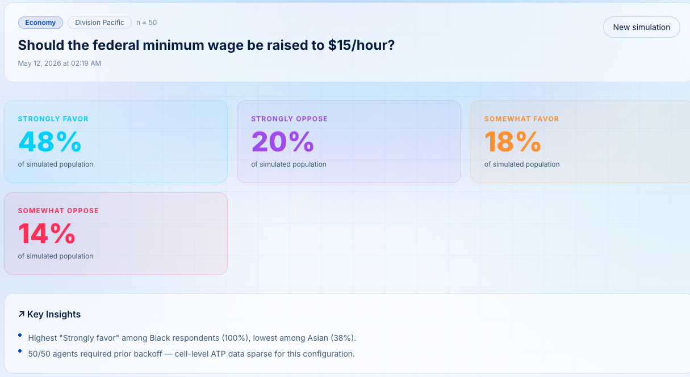
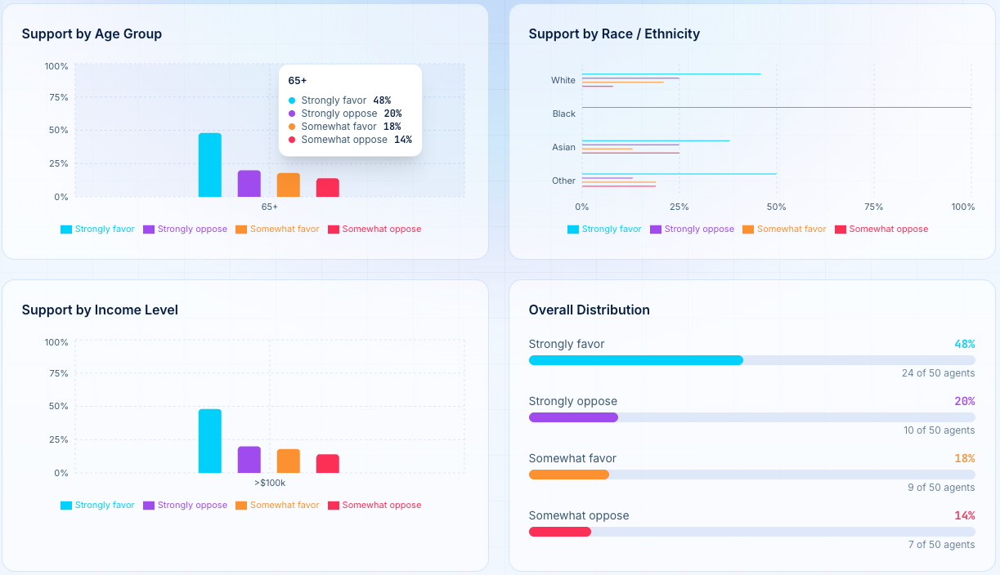

MIMS FINAL PROJECT · 2026
CivicSim
Demographically Grounded Large Language Model (LLM) Simulation of Public Opinion
01 · Background
Who uses population models?
Policymakers, election forecasters, and researchers
rely on statistical approximations to predict how populations will respond —
before any vote is cast or dollar is spent.
These models do not always produce accurate results.
2024 Elections
Standard polls failed to capture a major Hispanic voting shift because these communities were chronically under-sampled.
02 · Experimental Findings
Where do current models fall short?
① Polls survey from the wrong neighborhoods
30×
Error rate in representation of rural Black Americans across different Regions.
Where the error grows — poll sample vs. census population
All respondents
small
Rural residents
10×
Rural + Black + Low Income
30×
② Current models primarily focus on marginals, not intersections
age
or
income
or
location
or
race
Current research focuses on opinions of marginals, e.g., "What do Black individuals think?"
They rarely focus on demographic intersections, "What do young, low income, Black, rural voters from the Midwest think?"
03 · Our Solution

Fig. 1: CivicSim pipeline Architecture
① Who people are
We use U.S. Census ACS (American Community Survey) microdata — 3.5M+ respondents — vs. Pew ATP (American Trends Panel, ~38K) or GSS (General Social Survey, ~3K/yr) that current models rely on.
② What people believe
Opinion priors come from 79 waves of Pew ATP (2021–2024) · 7,728 items across 10 domains — health, immigration, economy, environment, technology & more.
Current models filter out demographic groups or cover only one domain.
Current models filter out demographic groups or cover only one domain.
③ How they respond
Each synthetic agent is prompted with their full demographic profile + calibrated opinion priors, then queried via an LLM to simulate a realistic, intersectional survey response.
04 · The Product


05 · Results
~2×
Which 3 facts best predict someone’s politics?
Race, location, and age - not the usual suspects
Standard models default to age, income, and education. We found race + location + age explains roughly twice as much opinion variance - at the exact same 3-variable cost.
47%
How much does geography actually matter?
More than income and education combined
Removing census region alone accounts for a 47% drop in predictive signal. Where someone lives is one of the strongest predictors in the dataset.
How much does each variable help predict someone's political opinion?
CivicSim's best order (race → location → age) Standard textbook order (age → income → education)